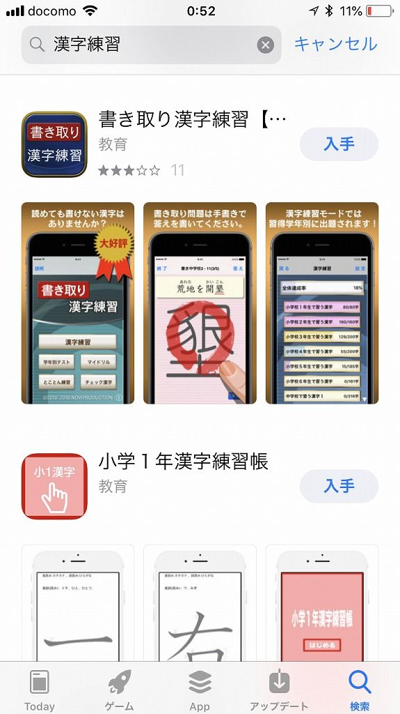
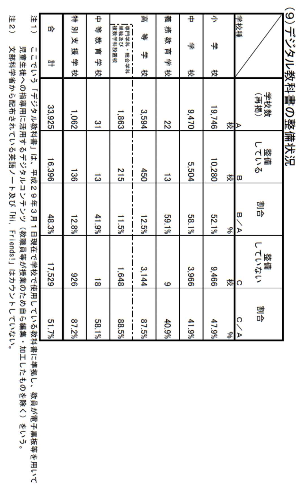

| ICTと発達障がい: 障がいや病気のある子どもの生きる場所を | |
| 山根洋平 | |
| (2018) | |
はじめに
本書は、身体・知的・精神・発達に障がいがある、または、ケガや病気があるために長期間入院しており、学習や就労のハードルが高いと考えている方が、パソコンやタブレットといったＩＣＴ機器を活用することで学習や就労、更には興味や趣味の幅を広げるきっかけになることを目指しています。
本書は、保護者や支援員、学校教員の方向けに書かれています。子どもたちのように、柔軟な思考で読んでみてください。きっと、たくさんの気づきと驚きがあるはずです。
ＩＣＴとは
ＩＣＴとは、「Ｉｎｆｏｒｍａｔｉｏｎ Ｃｏｍｍｕｎｉｃａｔｉｏｎ Ｔｅｃｈｎｏｌｏｇｙ」の略語で、和訳すると「情報通信技術」です。ＩＴの類義語にあたりますが、ＩＴとの違いは「Ｃｏｍｍｕｎｉｃａｔｉｏｎ」という単語が含まれていることです。
当初は、業務改善（デジタル化）やオートメーション化の為の技術だったＩＴが、ＳＮＳの台頭などにより、情報や知識の共有・伝達・活用、他者との関わりといった通信のコミュニケーションの重要性から、ＩＣＴと呼ばれるようになりました。
これは国際的に見ても同様で、日本では２００４年頃から、総務省でもＩＴとＩＣＴを区別して使うようになりました。
著者紹介
１９８５年群馬県生まれ。高校の入学祝いで祖母にパソコンを買ってもらい、独学でホームページ制作を始めたことをきっかけに、高校卒業後に地元のＩＴ企業に入社。２０歳のときに転職し、そこから本格的にプログラミングを学ぶ。
以降、様々な業種・企業のシステム開発やアプリ開発に携わっていくなかで、ＩＣＴなどのテクノロジーを活用することで障がいや病気のある人がもっと生きやすくなるのではないかと考え、２０１５年に起業。
現在は、法人向けにＩＣＴコンサルティングを行いながら、障がいのある子どもたちにプログラミングを教えたり、シニアにスマートフォンの使い方を教えりするなど、『ＩＴ×福祉』をテーマに活動を続けながら、ドローン事業やＡＩの研究を開始するなど最新技術にも興味が尽きない。
また、起業前にはクラウドファンディングにて「バリアフリー情報の地域情報サイト制作」プロジェクトを成功させ、ＵＮＩＱＵＳ（https://www.uniqus.jp/gunma/）
を運営している。
第１章 タブレットでできること
●その種類と特徴
一般的に、タブレット端末とは、「薄型で、携帯に便利であり、液晶画面に触れて（タッチして）操作する」ものです。電話機能のない、大きなスマートフォンといえばなんとなく分かるでしょうか。
現在、タブレット端末の種類は大きく分けて４種類あります。
タブレットを使う理由、タブレットで何がしたいかによっておすすめする端末は変わりますが、ｉＰａｄやＡｎｄｒｏｉｄタブレットの利用者が圧倒的に多いです。

●基本操作
タブレットには電源ボタンや音量ボタンなど、物理的な（本体から出っ張っている）ボタン以外は、液晶画面に触れて操作します。ここでは、基本的なタッチの動作について解説します。
●タップ
●ロングタップ
●マルチタップ
●フリック
●ピンチイン
●ピンチアウト
●アプリケーション（アプリ）とは
「アプリ」とは、アプリケーションの略称です。パソコンに入っているエクセルやワード、年賀状作成といった「ソフト」のスマホ・タブレット版をそう呼んでいると考えてください。
パソコン → ソフト、ソフトウェア
スマホ → アプリ、アプリケーション
その１つひとつが、何かに特化した機能を持っており、私たちがそれを起動し、操作することで利用できるものです。スマートフォンやタブレットは、この「アプリ」を自由に出し入れすることができます。
●アプリのインストール方法（ｉＯＳ・ＡｎｄｒｏｉｄＯＳ）
<ｉＯＳ編>
インストール手順１
「Ａｐｐ Ｓｔｏｒｅ」のアイコンをタップします。
インストール手順２
『検索』のタブを選択し、ほしいアプリの名前やキーワードを入力します。
インストール手順３
無料のアプリ（広告あり）の場合、『入手』ボタンをタップし、インストールを選択します。
有料のアプリは『入手』の文字が『￥
１２０』などとなっているのでひと目で分かります。

インストール手順４
インストールが終われば、端末のホーム画面にアイコンが追加されます。
<ＡｎｄｒｏｉｄＯＳ編>
インストール手順1
「Ｇｏｏｇｌｅ Ｐｌａｙ Ｓｔｏｒｅ」アイコンをタップします。
インストール手順2
検索欄をタップし、ほしいアプリの名前やキーワードを入力します。
インストール手順3
無料のアプリ（広告あり）の場合、『インストール』ボタンをタップします。
有料のアプリは『インストール』の文字が『￥
１２０』などとなているのでひと目で分かります。
第２章 教育現場におけるＩＣＴ活用の現状
●学校におけるＩＣＴ活用
文部科学省が実施している『学校における教育の情報化の実態等に関する調査』の結果を見てみましょう。デジタル教科書の整備・利用については、半数以上の学校が「整備していない」と回答しています。ＩＣＴ環境の整備については、機材の選定や活用方法において、その手法を模索している段階です。

平成２８年度「学校における教育の情報化の実態等に関する調査」より
●特別支援学級・特別支援学校におけるＩＣＴ活用
特別支援学校ではどうでしょうか。これは、(独)国立特別支援教育総合研究所の『特別支援学校における ＩＣＴ 活用の全国調査（速報）』というアンケート結果です。ＩＣＴ活用に関わる校務分掌は約９割が「ある」と答えています。
(独)国立特別支援教育総合研究所『特別支援学校におけるＩＣＴ活用の全国調査（速報）』より
しかし、その一方で、ＩＣＴ支援員の存在についてはほとんどが「ない」と答え、支援員が必要であると約７割の学校が回答しています。
(独)国立特別支援教育総合研究所『特別支援学校におけるＩＣＴ活用の全国調査（速報）』より
●学校におけるＩＣＴ活用はこの先どうなっていくか
２０２０年以降のプログラミング必修科目化を見据え、学校の授業においてもパソコンやタブレットの導入・利用がますます進んでいくでしょう。電子工作やプログラミング、コミュニケーションや学習の補助具として、より一層の利用頻度に拡大していくはずです。
文部科学省が平成２８年６月１６日に公表した、「小学校段階におけるプログラミング教育の在り方について（議論の取りまとめ）
」には、以下のようにあります。
○ 小学校段階におけるプログラミング教育については、学校と民間が連携した意欲的な取組が広がりつつある一方で、コーディング（プログラミング言語を用いた記述方法）を覚えることがプログラミング教育の目的であるとの誤解が広がりつつあるのではないかとの指摘もある。"小さいうちにコーディングを覚えさせないと子供が将来苦労するのではないか"といった保護者の心理からの過熱ぶりや、反対に"コーディングは時代によって変わるから、プログラミング教育に時間をかけることは全くの無駄ではないか"といった反応も、こうした誤解に基づくものではないかと考えられる。
○ プログラミング教育とは、子供たちに、コンピュータに意図した処理を行うよう指示することができるということを体験させながら、将来どのような職業に就くとしても、時代を超えて普遍的に求められる力としての「プログラミング的思考」などを育むことであり、コーディングを覚えることが目的ではない。"
つまり、「プログラミング」という科目が増えるのではなく、現在の教科のなかに新しい学び方が組み込まれるということです。未だ具体的な授業内容は明らかになっていませんが、スマートフォンやタブレット、プログラミングやアルゴリズムを今のうちから体験させたい、学ばせたいと考える家庭が増えています。
第３章 障がいのある子どもにこそＩＣＴ活用を
●スマートフォンやタブレットの特長を最大限生かす
インターネットが一般家庭に普及する前、私たちは分からないことがあったときに、どのようにして調べていたでしょうか。家族に聞いたり、辞書を引いたり、学校の先生に聞いたり、図書館で調べたりしていたと思います。今やそれが、ネットで検索したり、人工知能のＳｉｒｉやＧｏｏｇｌｅアシスタントに声で質問できるようにもなりました。今やインターネットは、ライフラインのひとつと言っても過言ではないでしょう。
筆者が、子ども向けの講座でタブレットを頻繁に使用するのは理由があります。
①持ち運びしやすいこと
②直感的に操作ができること
③用途が限定されないこと
①と②については、解説不要と判断して割愛します。最も重要なのは③です。先述の通り、スマートフォンやタブレットはアプリを自由に出し入れできます。専用のストア（インターネット上の店舗）には、個人や企業が独自に作ったアプリが約２００万本配信されており、無料や有料の分類はあれど、自由に選び利用することができます。詳しくは次の章でも解説しますが、アプリの種類は実に多岐にわたっており、英和辞書、星座早見表、昆虫図鑑、日本地図、小説などなど、ランドセルに入れたら歩けないほど重くなる本の量であっても、アプリならタブレット１台分の重さです。
タブレットは、わずか１kg に満たない重さのなかに山ほどの書籍を詰め込める４次元ポケットのような存在と言えます。持ち運びしやすく、使う場所も選ばない。この特長を最大限に活用し、子どもたちの興味や学習に役立ててほしいと筆者は考えています。
●より多くの五感を使う
スマートフォンやタブレットは、アプリの多さはもとより、"本にはない機能"があることを忘れてはいけません。
それは、「映像」と「音声」です。
アプリのなかには、たとえば動物の鳴き声を再生できるものや、理科の実験を動画で見られるものがあります。教科書では文字や静止画で表されていたものが、アプリを使うとより多くの情報を得ることができ、理解や興味に繋がります。ＬＤ（学習障害）のある子どもたちにとっても、活字を追うより学びやすいかもしれません。
また、アプリには文字の読み上げ機能のあるものや、映像の声が字幕表示される動画もあります。視覚障害や聴覚障害をサポートする機能やアプリがあることも、ＩＣＴを活用してもらいたい大きな理由のひとつです。
第４章 アプリを使った学習法の例（遊びながら学ぶ編）
数あるアプリのなかから、無料で、操作が分かりやすいアプリをいくつかご紹介します。ここで紹介しきれないアプリは、ぜひ子どもたちと一緒に試してみてください。
※執筆時点の情報のため、既に配信終了している可能性があります。ご了承ください。
●ごっこランド
ごっこランド（ｉＯＳ、ＡｎｄｒｏｉｄＯＳ／無料）
ごっこ遊び・知育・社会体験など、１２
種のコンテンツが楽しめるアプリです。おすし屋さんやラーメン屋さんになりきって遊べます。対象年齢は２歳からです。
●日本パズル
あそんでまなべる 日本地図パズル（ｉＯＳ／無料）
ジグソーパズル感覚で都道府県の位置や名前を覚えることができる教育系パズルゲームです。県名表記と境界線があるトレーニングモード、県名表記があるベーシックモード、ヒントが無いエキスパートモードの３つから選べます。
●国語海賊
国語海賊 〜２年生の漢字編〜（ｉＯＳ／無料）
小学校２年生で覚える１６０コの漢字を全てカバーしているアプリです。海賊船に乗って漢字海賊達に挑むというゲーム性がありながらも、「漢字の読み」「漢字を視覚的に覚える」「文章」等の問題をくり返し解いていくことで楽しく学べる工夫がされています。
第５章 アプリを使った学習法の例（テスト・受験勉強編）
もっと本格的な学習や、試験対策、苦手教科の克服を考えている方は、こちらで紹介するアプリを試してみてください。
※執筆時点の情報のため、既に配信終了している可能性があります。ご了承ください。
●中学理科
「スマホ中学理科（ＡｎｄｒｏｉｄＯＳ／無料）」
高校入試向けの生物、物理、化学、地学などの問題が出題されます。詳しい解説付きです。同じシリーズで社会や英語バージョンも配信されています。
●漢検トレーニング
「漢検トレーニング（ｉＯＳ、ＡｎｄｒｏｉｄＯＳ／無料）」
９分野、全５０４２問題が収録されています。
漢字能力検定の２級、準２級、３級、４級、５級、６級で出題される全1１４９４漢字の「書き取り」「読み方」などを練習することができます。
●アオイゼミ-中学高校勉強アプリ
「アオイゼミ（ｉＯＳ／無料、アプリ内課金あり）
４０００本以上の豊富な授業動画の中から学びたい授業を自由に選べます。生放送授業はその場で質問もできます。
時間や場所を選ばずにプロの授業を受けられるアプリです。
第６章 子どもの"スマホ依存"を予防する管理機能
今、社会問題にもなっている子どもの「スマホ依存」。スマートフォンやタブレットには、そういった使いすぎを管理する機能やアプリについてもご紹介します。
●ｉＰａｄ（ｉＯＳ）編
ｉＰａｄ（ｉＯＳ）には、アクセスガイドという標準で備わっている保護者機能があります。タブレットで遊ぶ時間を制限したい、怪しい広告を間違ってタップしないようにしたいなど、保護者がほしいと思う機能が最初から搭載されています。
「設定」アイコンをタップし、一般 > アクセシビリティ > アクセスガイドへと進みます。設定を『ＯＮ』にしたら、ホーム画面へ戻ります。
その後、遊ばせたいアプリを起動します。
その状態でホームボタンを３度クリックすると、アクセスガイドが起動します。
このような画面です。
この画面では、触れる範囲の限定、時間の指定などが可能です。
たとえば、広告をタップしてほしくないときは、禁止エリアを指でなぞります。
設定が完了したら、画面右上の『開始』ボタンを押します。解除するときもホームボタンを３度クリックしてください。
※アプリの画面下をタップ禁止エリアに指定した状態です
タブレットを使う前に子どもと約束をし、目の届く範囲で遊ばせることでしっかりと時間を守って遊ぶことができます。
●Ａｎｄｒｏｉｄタブレット（ＡｎｄｒｏｉｄＯＳ）編
Ａｎｄｒｏｉｄタブレット（ＡｎｄｒｏｉｄＯＳ）には、分かりやすい保護者向けアプリがあります。
「まもるゾウ２」（子ども側アプリ月額定額制、保護者側アプリ無料）
まもるゾウ２は、子どもがスマートフォンを使うときの制限を細かく設定できるアプリです。主な特長としては以下のとおりです。
- 使用できるアプリを選択できる
- 使用できる時間を制限できる
- 通話していい相手、通話時間などを制限できる
- 使用状況をモニタリングできる
アプリに対して「使うときの約束」を設定できます。
使える時間帯を細かく設定できます。
第７章 現代の子どもは"デジタルネイティブ世代"
●デジタルネイティブ世代の特徴
「デジタルネイティブ世代」という言葉があります。学生時代からインターネットやパソコンのある生活環境の中で育ってきた世代を指し、日本では１９８０年前後生まれ以降が該当するとされています。対義語として、社会人になってからインターネットやパソコンに触れた世代を「デジタル移民」と呼びます。
この「デジタルネイティブ世代」にはいくつか特徴的な考え方がありますが、最も社会問題になりやすいのは「現実と仮想（インターネット上）の差があまりない」ことです。つまり、デジタルネイティブ世代にとって、ＴｗｉｔｔｅｒやＬＩＮＥなどのＳＮＳやコミュニケーションツールは現実の会話と等しく、ＳＮＳ上でのいじめは、現実のいじめに匹敵する（もしくはそれ以上と考える傾向にある）ということです。デジタル移民である保護者や教育者は、これを現代の価値観として許容し、理解してあげなければなりません。
●インターネットだからこそ安心できること
先述の通り、今やいじめはインターネット上でも起こりうるものです。「デジタルネイティブ世代」である今の、そしてこれからの子どもたちにとって、ネット上のいじめは現実世界となんら変わりません。しかし、筆者は良い面もあると考えています。
それは、「ログ（履歴）が残ること」です。インターネットやアプリには、書き込みや閲覧の履歴が残る仕組みがあります。いざというとき、もしものとき、その痕跡を辿れるのは、証拠を掴むのは、もしかしたらインターネットかもしれません。

●どうせなくせないなら、正しい使い方を
たとえば拳銃やナイフなら、何故危ないのかを大人は教えられます。しかし、インターネットやＳＮＳが何故危ないのか、何が正しい使い方なのかをきちんと教えられる大人は少ないのが現状です。
私たち大人が「よく分からないから危険」というのは、それ自体が子どもたちを納得させるには不十分な理由であり、最悪の場合、大人が出し抜かれる可能性もあります。今の世の中からインターネットをなくすことも、絶対にインターネットを使わずに生きることももはや不可能でしょう。
既にインターネットがインフラの一部であり、情報がライフラインになった現代では有り得ないことです。そうなれば、私たち大人が正しい使い方を知り、危険を察知し、犯罪や事件から子どもたちを守ることを考えるしかありません。
インターネットは、使い方しだいで拳銃やナイフのように人や自分を傷つけることができる力を秘めています。しかし、それら同様に、良い方向に使うこともできます。それを示すのもまた、私たち大人の使命だと感じています。
第８章 働き方の多様性
情報化社会の加速化、超少子高齢化、労働人口の減少、それらによって人々の働き方も多様性が求められる時代になりました。現在、同一労働同一賃金の実現や長時間労働の是正を目指して政府が進める「働き方改革」を皮切りに、様々な企業で改革に向けた取り組みが始まっています。
●働く目的の変遷
ＩＴ化によって仕事が変化し、それによって働く人の意識も変化しています。
たとえば、新入社員の意識調査の変遷を見てみましょう。引用元の資料にありますが、「人並みに働いて、楽しい生活をしたい」という志向が強まり、好んで苦労することはない（２９・３％
）、楽しい生活をしたい（４２・６％
）が過去最高となっています。今の若者たちがどう考え、何のために働くのか。私たち大人は、たとえ当時の、今の自分の考えとは違うとしても、理解してあげる必要があるはずです。
公益財団法人 日本生産性本部／一般社団法人 日本経済青年協議会
平成２９年度 新入社員｢働くことの意識｣調査結果より
●新しい働き方
２０１６年９月、政府の「働き方改革実現会議」がスタートしました。同一労働同一賃金の実現による処遇改善のほか、長時間労働の是正によるワーク・ライフ・バランスの改善や女性・高齢者の就業促進などが主なテーマに据えられています。
その「働き方改革」のひとつに、"テレワーク"があります。「テレワーク（ｔｅｌｅｗｏｒｋ）」とは、「テレ(ｔｅｌｅ)=離れた場所で」と「ワーク（ｗｏｒｋ）=仕事」の２つを組み合わせた言葉で、「ＩＣＴを活用し、時間や場所を有効に活用できる柔軟な働き方」のことです。
出産や育児、介護、自身の障がいや病気...様々な事由から仕事を手放さなくてはならない人たちが、在宅で仕事をすることで収入を失うことなく生活ができるほか、企業も、大事な人材の喪失（離職）を防ぐ目的もあります。
それ以外にも、テレワークにはこのような効果があると総務省は提言しています。
◆ワーク・ライフ・バランスの実現
・家族と過ごす時間、自己啓発などの時間増加
・家族が安心して子どもを育てられる環境の実現
◆地域活性化の推進
・ＵＪＩターン・二地域居住や地域での企業等を通じた地域活性化
◆環境負荷軽減
・交通代替によるＣＯ２の削減等、地球温暖化防止への寄与
◆営業効率の向上・顧客満足度の向上
・顧客訪問回数や顧客滞在時間の増加
・迅速、機敏な顧客対応の実現
◆コスト削減
・スペースや紙などオフィスコストの削減と通勤・移動時間や交通費の削減等
◆非常災害時の事業継続
・オフィスの分散化による、災害時等の迅速な対応
・新型インフルエンザ等への対応
※総務省テレワーク推進のＨＰより引用
●テレワークの導入状況
図のとおり、今はまだテレワーク導入企業の割合は１２･１％ 程度です。それには様々な理由があるからです。理由については、次の図を見てもらいましょう。
最も大きな課題と考えられているのは、「情報セキュリティの確保」です。社内の資料やパソコンを自宅に持ち帰ることは、それだけで漏えいや紛失のリスクを伴います。また、「勤怠の管理」や「コミュニケーションの不足」を懸念する企業も多いようです。

こうしてみると、自分たちの身近では、まだまだテレワークの導入はないだろうと肩を落とす人もいるかもしれません。しかし、少子高齢化がますます進む日本では、とにかく労働力の確保が急務です。そのためにも、いずれ地方の企業もこういった制度を取り入れ、より多くの人に働いてもらう環境づくりをすることになるのは間違いありません。
●ＩＴ業界の強み
この章を読んできて、『多様性が認められ、テレワーク・在宅勤務が普及しつつあるとはいえ、本当に障がいがあっても働けるのか？』と疑問に思う方もいるでしょう。そうした先進的ともいえる取り組みは、やはりＩＴ業界だからこそできるといえます。
たとえば接客業であれば、正装し、お客様と話すなどコミュニケーションが求められます。どんな仕事も、身なりや、様々な動作（料理の提供や、工事など）が求められます。障がいや特性によっては、ここに大きな壁がある人も少なくないでしょう。
ですが、ＩＴはどうでしょう。在宅で良いということは、服装は一切関係ありません。パソコンの前で仕事をするので、身体に障がいがあってもできるかもしれません。極端な例を挙げますが、スマートフォンアプリの動作をチェックするテストというお仕事（工程）もあります。これは、言ってしまえばベッドの上でもできてしまうかもしれません。
つまり、他の仕事にはない働き方がある・できるというのがＩＴ業の強みだと筆者は考えています。社会の理解や制度だけではなく、働き方そのものが他とはまったく違うものなんだと感じていただきたいです。
実際、当社にはグレーゾーンのアルバイトや、障がい者手帳を持つデザイナーがテレワークをメインに勤務しています。従業員の半分は、そういった特性のある方々です。週１や月に数回会って話をする以外は、自宅で作業してもらっています。もちろん、日々の連絡はメールやＬＩＮＥなどで取り合っています。
「仕事に人を合わせる」のではなく、「人に仕事を合わせる」ということ。これから普及していくだろう働き方改革を、まずは当社で実践しています。
第９章 まとめ
●サンダーバード株式会社が目指す未来
「障がいも、病気も、テクノロジーで超える。」
これが創業当初から掲げる当社の企業理念です。
ＩＣＴが何故便利なのか？それは、人間をサポートしてくれるからです。膨大な計算を一瞬でしたり、声で文字を打ったり、逆に文字を読み上げてくれたり。人の行動や生活を補ってくれるのがＩＴです。
だから当社は、このＩＴ、ＩＣＴを障がいや病気のある人たちにこそ活用してほしいと考えています。そして、その方法が分からなければ、どこへでも教えに行きます。
当社が目指す未来は、２つあります。
１つは、「ランドセルにタブレットを入れて学校に行く日が来ること。もしくは、学校に行かなくても（施設や病院からも）タブレットで授業が受けられるようになること」です。
目が悪い子が眼鏡をかけるように、漢字や計算が苦手な子がタブレットを机に置いて授業を受けられる日を望んでいます。それは決して怠けたり楽をしているわけではないことは、読んでくださっている方なら解っていただけているかと思います。
学校で勉強を教えるのは、生きる力を、生きる術を教えるためです。そしてそのことを、理解できるようにするためです。そうであるなら、タブレットを使って生きられるということ、決して生きにくい世界ではないことも、教えてあげるべきだと筆者は考えています。
夏休みの宿題は、タブレットで漢字練習して、メールに添付して送りましょう。先生は、専用のホームページで提出状況をチェックしましょう。そんな日が来たら、きっと未来はもっと変わるだろうと思います。
もう１つの目指す未来は、やはり「障がいがあっても働ける社会の実現」です。法定雇用率も平成３０年４月１日から引き上げになり、障がい者雇用が増えることにはなると思います。様々な業種がもっとＩＣＴを活用するようになれば、もっと働ける場は増えるはずです。当社としては、民間企業に更なるＩＴの活用を推進し、障がいや特性があっても働ける環境を生み出していきます。
●テクノロジーは人を選ばない
人は同じことを何度も聞かれたり、何度も同じことをしたりするのは嫌になってしまいますが、機械は決して嫌とは言いません。それが機械の良いところです。
テクノロジーは使う人を選ばないこと。もっと言えば、使う時間も、使う場所にも文句を言いません。その最大のメリットをもっと実感してもらいたいのです。
子どもは、大人に「その答え間違っているぞ」「なんで何度も間違えるんだ」と言われたら傷ついたり落ち込んだりして、自信をなくしてしまいがちです。ですが、不正解のときにタブレットが「ブブー」と大きく×マークを出しても、子どもはそれほど傷つきません。
遊ぶように学び、学ぶように遊ぶ。
子どもたちにとって、タブレットでしかできないことも、きっとあります。
あとがき
２０１７年６月２４日に、フォレスト放課後デイサービス様、ＮＰＯ法人ソーシャルグッド様と共催した発達障害講演会の後、何名かの方がもっと話を聴いてみたいと言ってくださったときにこういったかたちで電子書籍を出そうと決めました。
ＹｏｕＴｕｂｅでもその講演の動画を公開していますが、文字に起こすというのは頭の中の情報を整理するようで思ったより楽しい作業でした。
障がいや特性のある子どもたちと接していて思うのは、ＩＴ業界に向いている子が多いということです。
全員とは言いませんが、私も含め、ＩＴ業界に身を置くエンジニアたちはある種マニアックなところがある人が多く、これは言わばこだわりで、コーディングしているときは寝食を忘れるほど過集中になる人がいれば、なかなか他者とコミュニケーションが取れないけどとびきり優秀なエンジニアという人もいます。
運動が苦手でも、コミュニケーションが苦手でも、自分に合う職業があるかもしれない。そんな風に、将来の選択肢のひとつとしてＩＴ業界の道を考えてもらえたら幸いです。
テクノロジーとは、人の不足を補うための技術です。パソコンの画面の前では、障がいや特性はまったく関係ない。一人ひとりの「できない」を「できる」に。当社はこれからも最新技術を追究しながら、それが子どもたちにとって、未来にとってどのように活用できるかを考え行動してまいります。